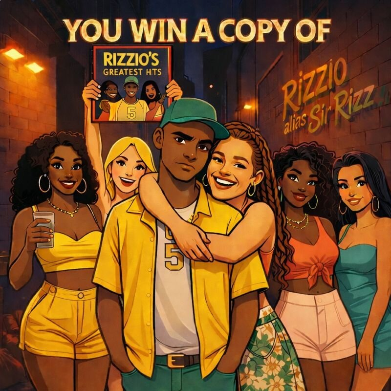

🎤✨================================================✨🎤
🏆 RIZZIO ANTHOLOGY COMPANION 🏆
Volume 1: The Origin of Swagger
Compiled & Annotated by Steven & Copilot
🎤✨================================================✨🎤

📀 VOLUME 1: THE ORIGIN OF SWAGGER
Bravado, seduction, and mythic setup
Home
- GIRL CALLED SALLY
- IN A FUNNY WAY I DON'T FEEL SORRY YOU'RE GETTING WHAT YOU SERVED
- BBRAND NNEW PPLAYER
- END OF THE WORLD (NOT THE)
- MOTORWAY MAN
- MY MISSES
- LIKE THOSE LOVELY GIRLS SAY
- BIG BOOTY BITCHES, SLUTTY SLAGS AND HORNY HOES
🔥 Volume 1 Appraisal
This volume introduces Rizzio as a mythic seducer and street philosopher. Tracks like “Motorway Man” and “My Missus” blend humor, heartbreak, and hyperbole. “Big Booty Bitches…” becomes a rhythmic fever dream—equal parts satire and swagger. The repetition of key phrases establishes Rizzio’s voice as both prophet and predator.
Key Themes: Persona as performance, seduction as ritual, funk as life force, myth-making through exaggeration.